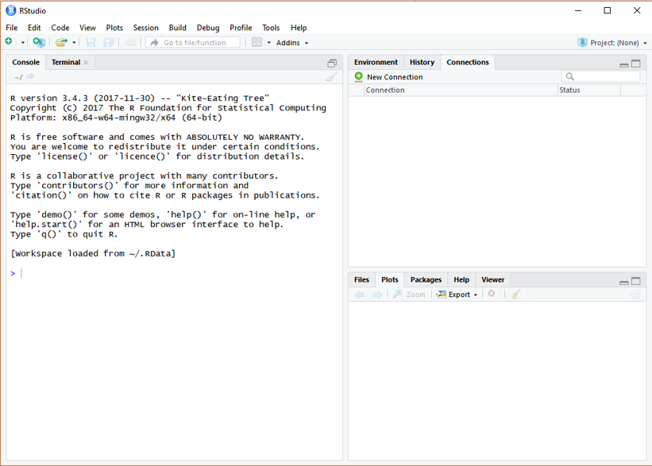

Basic of R


Installation of R
After you click the following link: https://cran.r-project.org/
You will see as the following figure. Click the proper link and start the installation

For Mac User: Make sure you are downloading the correct version, otherwise it will cause errors
Installation of R studio
After you click the following link: https://www.rstudio.com/products/rstudio/download/
You will see as the following figure. Choose the free version, which is totally enough for our class application and practice

Tip: Update R language in Rstudio
For Windows users only:
# install package installr ---- install.pacages("installr") # load package ---- library(installr) # update R ---- updateR()For Mac users:
Go to R project to download the latest R.
Note: make sure to install the correct version of R for your Mac chips.
RStudio Interface
If you have successfully installed the R studio, you will see the same R studio console as the below figure showing after launching on the RStudio. (OS: Windows 10)
In this class, all the practice, homework, and project will be processing on RStudio.

R Packages
A package is essentially a library of prewritten code designed to accomplish some task or a collection of tasks. It is the most powerful tool in the R.
In this class we will be more focused on the package of ggplot2, which is most efficient package for visualization. Though there are still some very robust and well-maintained packages out there, such as dplyr, readr, caret, tibbles, or knitr.
Installation of R Packages
The fastest way to do is typing the following scripts in the Rstudio.
# install package ggplot2 (package name should be a string)
install.packages("ggplot2")
NOTE: the package name is case sensitive, which means Ggplot2 is different from ggplot2
Get Help Document
There are 3 ways to get help document.
-
Press F1 (for laptop may click
Fn+F1, or "Other function key"+F1) and then the help tab will pop up on the right bottom of the RStudio. -
Type
help(install.packages) -
Type
?install.packages
Then you will see:

Un/Loading R Packages
Loading R packages (Two ways)
library(ggplot2)

Or:
require(ggplot2)

require is designed for use inside functions returning FALSE/TRUE.
Unloading R packages:
detach("package:ggplot2")
NOTE 1: We usually ignore the warning message, not all the time.
NOTE 2: You may need to load the packages again if you relaunch RStudio.
NOTE 3: It will automatedly detach all the global packages you loaded after closing Rstudio,
then follow NOTE2...
Packages Needed
You’ll also need to install some R packages. An R package is a collection of functions, data, and documentation that extends the capabilities of base R.
install.packages("tidyverse")
library(tidyverse)

This tells you that tidyverse is loading the ggplot2, tibble, tidyr, readr,
purrr, stringr, forcats, and dplyr packages. These are considered to be the core of the tidyverse
because you’ll use them in almost every analysis.
This also tells you that there are two functions from dplyr having conflicts with stats.
You'll use dplyr:: or stats:: to specific the function from dplyr.
This is a very common issue students may have.
Installation of R Markdown
There are many other excellent packages that are not part of the tidyverse.
# install r markdown from CRAN ----
install.packages("rmarkdown")
# or if you want to test the development version ----
# install from GitHub ----
if (!requireNamespace("devtools"))
install.packages('devtools')
devtools::install_github('rstudio/rmarkdown')
If you want to generate PDF output, you will need to install LaTeX. For R Markdown users who have not installed LaTeX before, we recommend that you install tinyteX.
# install tinyteX ----
install.packages("tinytex")
tinytex::install_tinytex()
If you have any issues with R Markdown, feel free to check: FAQ for the class
References:
[1] Hadley Wickham, Garrett Grolemund. R For Data Science. 2017.
[2] Yihui Xie, J. J. Allaire, Garrett Grolemund. R Markdown. 2022.